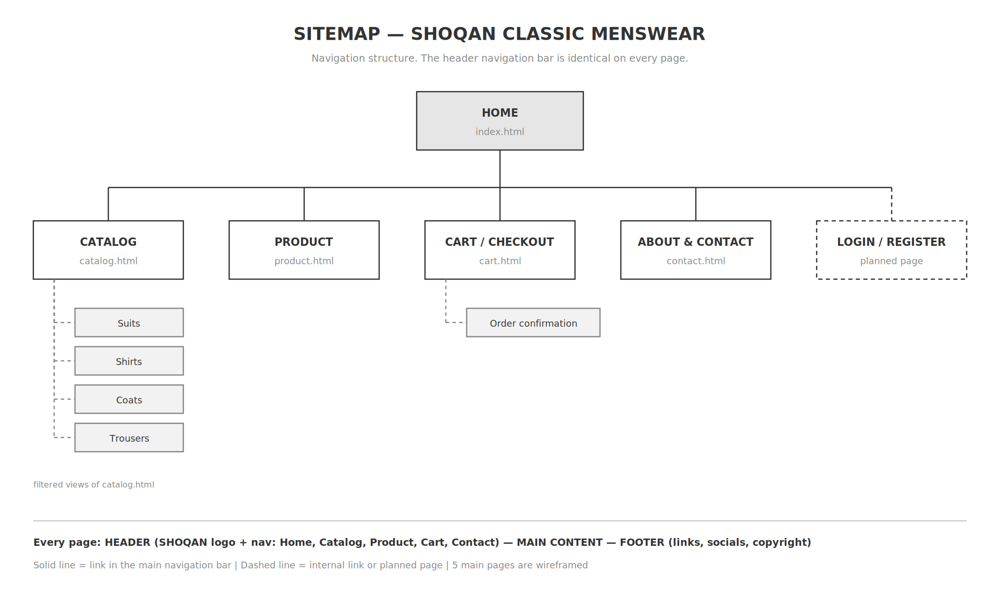
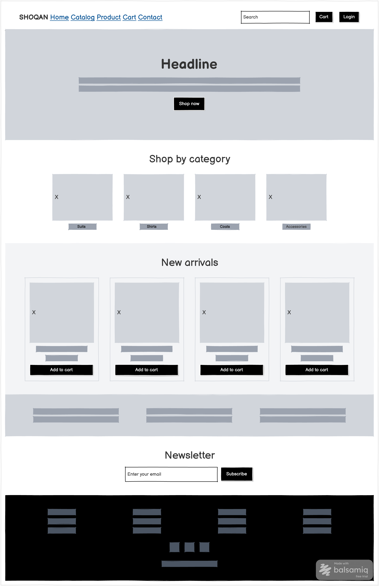
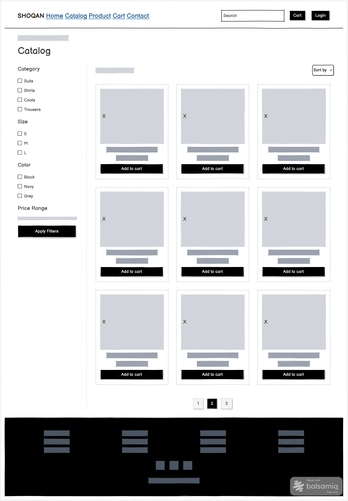
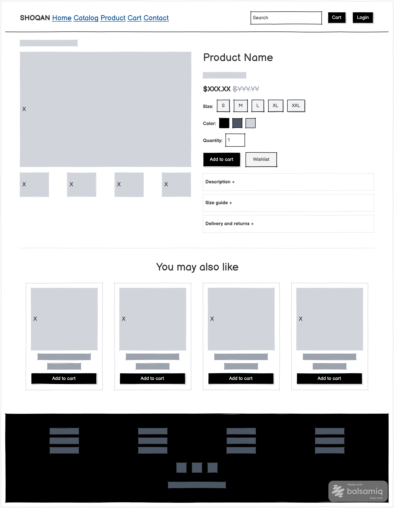
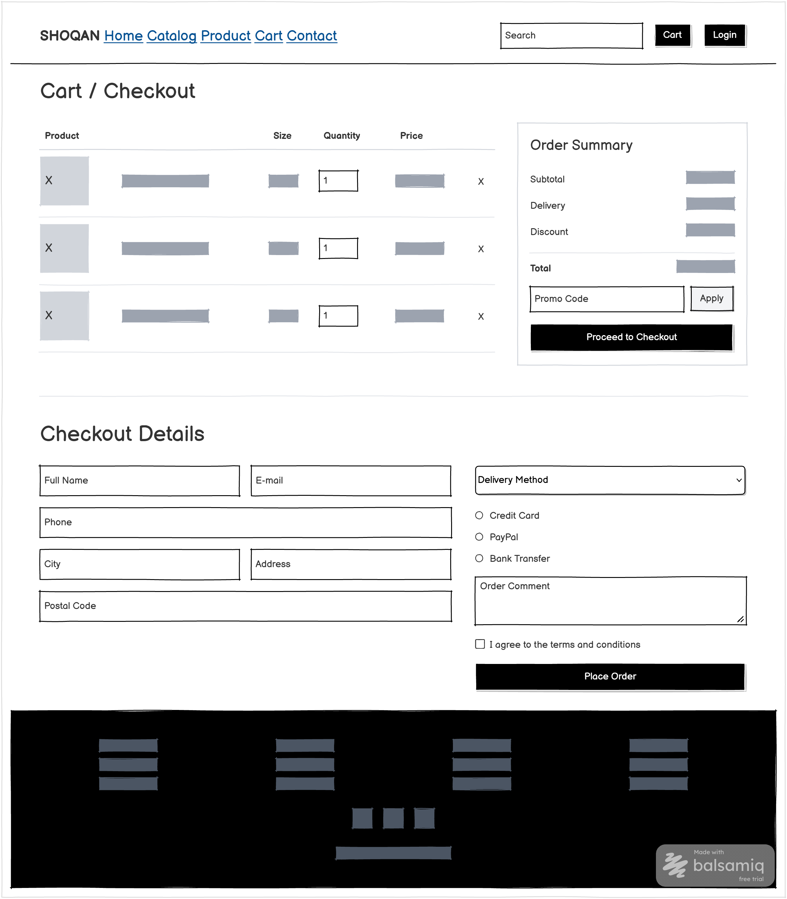
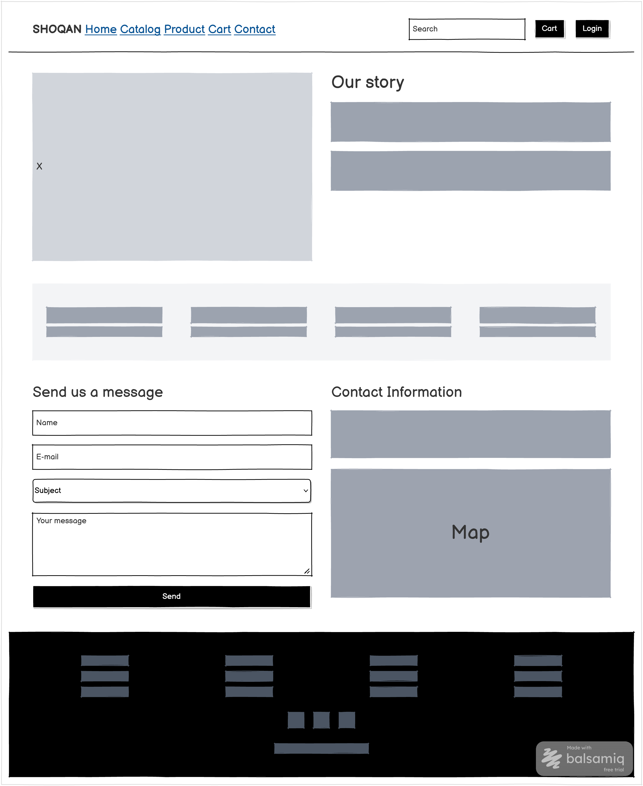

Sitemap
Navigation structure of the website: 5 main pages plus an additional Login/Register page.

Page 1 — Home (index.html)
Hero banner, categories, new arrivals, advantages strip, newsletter block.

Page 2 — Catalog (catalog.html)
Sidebar with filters on the left, product grid and pagination on the right.

Page 3 — Product (product.html)
Gallery, product information, size and colour selection, description, related products.

Page 4 — Cart / Checkout (cart.html)
Cart table, order summary and the checkout form with inputs, select, radio buttons and textarea.

Page 5 — About & Contact (contact.html)
Store story, statistics, feedback form, contact details and map placeholder.
